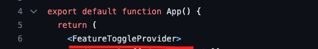

- Жила-была большая задача
- Feature Flags
- Итого/Подвохи
- Полезное почитать
- ❌ Boilerplate
- ❌ Лишние шаги для релиза/старта
- ❌ Путаница в урлах
- ❌ Тестирование требует разных вкладок/измения урла
- ❌ Нужен отдельный стенд / или учить дизайнеров разворачивать локалку
- ❌ Нужны отдельные ветки
- ❌ Требует больше контроля и боли разработчиков
- Конфиг всех фич
- Контекст над приложением
- HOC и Hook
- Интерфейс для управления
- Заводим фича-флаг
- Ведем в нем разработку
- Перед релизом меняем в конфиге строчку inRelease на true
- если что-то пошло не так - быстро отключаем фичу одной строкой
- В следующем релизе зачищаем фича-флаг и deprecated код
- ✅ Нет доп закрытых урлов
- ✅ Более быстрый релиз фичи
- ✅ ✅ ✅ Рантайм!
- Требует контроля от разработчиков
- Больше кода в сборке
Жила была фича
упрощаем релиз больших фич
Жила-была большая задача
История 1 - обновление фичи


Проблемы:
История 2 - песочница
Как быть?
Feature Toggles

Что для этого нужно
Конфиг
"demoFeature": {
"description": "Этот тогглер что-то делает",
"caption": "Супер тогглер",
"responsible": "Maria Kondaurova",
"inRelease": false
},
Контекст над приложением
+ localStorage для хранения фичи